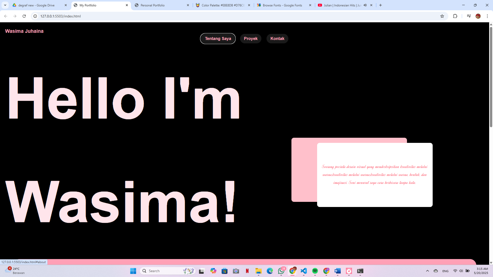
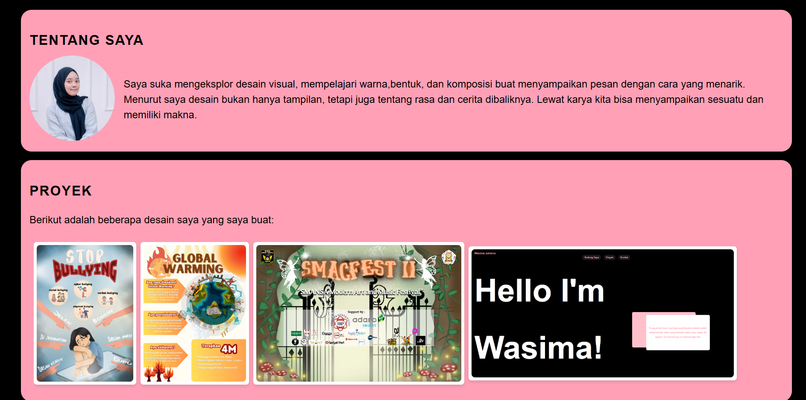

Hallo, saya Wasima Juhaina
Saya adalah mahasiswa Sistem Informasi di Universitas Amikom Yogyakarta.
Saya tertarik pada dunia pengembangan web dan machine learning.
Saya juga memiliki minat dalam UI/UX design. Saya sangat tertarik dalam mempelajari hal baru dan
saya tertarik dalam mengeksplor desain visual, karena menurut sata desain bukan hanya tampilan, tetapi juga tentang rasa dan cerita dibaliknya.
Riwayat Pendidikan
- SD Negeri 3Ampah
- MTSN 2 Barito Timur
- SMA Negeri 1 Amuntai
- Universitas Amikom Yogyakarta
Bidang Keahlian
| No | Keahlian |
|---|---|
| 1 | Full Stack Developer |
| 2 | Machine Learning Engineer |
| 3 | UI/UX Designer |
Video Profil
Galeri Foto

